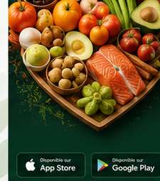

Inventaire invisible
Les aliments sont répartis entre frigo, congélateur et garde-manger. Personne ne sait exactement ce qui est disponible.
Solution
Le produit transforme le frigo, le garde-manger et la liste d’épicerie en un système collaboratif compréhensible par toute la famille.

Les aliments sont répartis entre frigo, congélateur et garde-manger. Personne ne sait exactement ce qui est disponible.
Les produits proches de l’expiration ne sont pas visibles au bon moment, donc ils finissent souvent à la poubelle.
Chaque membre ajoute des articles sans toujours vérifier ce qui existe déjà ou ce qui est déjà acheté.
Réponse MealSaver
MealSaver priorise les aliments urgents, propose des recettes avec les ingrédients disponibles et synchronise la liste d’épicerie.
